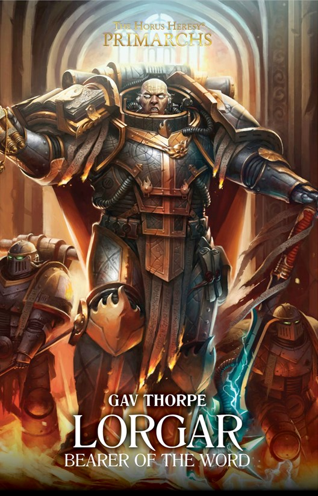

LORGAR: BEARER OF THE WORD

Author: Gav Thorpe
Format: Novel
On Colchis, Kor Phaeron raises the young Lorgar amid rival faiths and political ambition. As religious war spreads, Lorgar must decide how to meet his adopted father's expectations and the future he sees for himself.
Introduction reviewed against Black Library’s description on 2026-09-27. The publisher page may contain spoilers.
Publication facts: publisher source, checked 2026-09-26.
Open this work in the interactive Archive to track reading progress and explore related works.